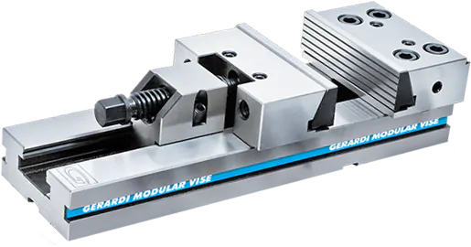
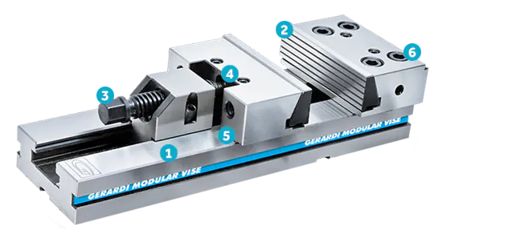

GERARDI STANDARD SERIES
Las más copiadas del mundo.
Sin embargo, ninguna mordaza de imitación ofrece la misma precisión, fuerza de sujeción, modularidad y rigidez.

De la fábrica en Italia a tus manos en 15 días
Velocidad
- Los chaveteros cruzados esmerilados en la base permiten un posicionamiento preciso en la bancada de la máquina en segundos
- La mordaza móvil se empuja en su lugar a mano con un ajuste final con la llave
Modular
- Con docenas de accesorios que incluyen mordazas, placas paralelas y sistemas de sujeción automatizados, las mordazas de la serie estándar son capaces de sujetar casi cualquier cosa
Preciso
- Todas las superficies de trabajo están rectificadas dentro de +0,01 mm (precisión general +0,02 mm)
- Repetibilidad líder en el mercado para un tornillo de sujeción mecánico
Poderoso
- Fuerza de sujeción de 30 kN con 1/4 de vuelta final de la llave (mordaza de tamaño 3, ancho de mordaza de 150 mm)
- Fabricado con acero de aleación endurecido Rockwell 60 - sin desgaste
- Rigidez extrema y la sujeción más segura
Calidad, polivalencia, precisión y rigidez... ¡La combinación perfecta para los centros de mecanizado verticales!
Todas las mordazas y accesorios Gerardi son modulares y los componentes de todas las mordazas Gerardi se intercambiarán con una alineación perfecta.

1
Endurecido y Molido
Base, mordazas y husillo de acero endurecido HRc60, precisión total +0,02 mm.
2
Máxima precisión de reposicionamiento
Con piezas de trabajo perfectamente cuadradas.
3
Sujeción mecánica como estándar
¡FUERZAS EXTREMAS hasta 50kN! (Hidráulico e hidroneumático opcional)
4
Orificios roscados para aplicaciones especiales
Agujeros extra roscados sobre las mordazas para aplicaciones especiales de mordazas tipo pila Gerardi.
5
Apertura máxima aumentada
Con la adición de extensiones de mandíbula.
6
Mordaza fija con escalón trasero de 5 mm (reversible)
Para usar con mordazas móviles prismáticas y escalonadas.